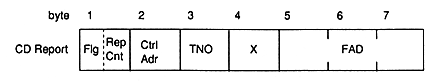
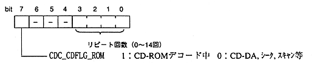

Title | Data | Data Name | No |

Flg: CD flag (upper 4 bits) …… Valid in 〈PLAY〉 state Rep Cnt: Repeat count (lower 4 bits) …… Notification range is 0H to EH
Ctrl Adr: CONTROL / ADR byte TNO: Track number (binary value, not BCD) Based on subcode Q X: Index number (binary value, not BCD) FAD: Frame address (based on header information for CD-ROM, otherwise based on subcode Q)
status | CD flag / repeat | CONTROL / ADR | track number | index number | frame Address |
|---|---|---|---|---|---|
〈BUSY〉 | ○ / FFH | ○ / FFH | ○/FFH | ○/FFH | ○/FFFFFFH |
〈PAUSE〉 | ○ | ○ | ○ | ○ | ○ |
〈STANDBY〉 | pause value | pause Value | pause value | pause value | pause value |
Seek home | FFH | FFH | FFH | FFH | FFFFFFH |
〈PLAY〉 | ○ | ○ | ○ | ○ | ○ |
〈SEEK〉 | ○ | target position | target position | target position | target position |
〈SCAN〉 | ○ | ○ | ○ | ○ | ○ |
〈OPEN〉 | FFH | FFH | FFH | FFH | FFFFFFH |
〈NODISC〉 | FFH | FFH | FFH | FFH | FFFFFFH |
〈RETRY〉 | ○ | ○ | ○ | ○ | ○ |
〈ERROR〉 | FFH | FFH | FFH | FFH | FFFFFFH |
〈FATAL〉 | indefinite | indefinite | indefinite | indeterminate | indeterminate |
(a) The previous value is retained for the repeat count. When transitioning to another state, the held value is restored. (B) Move from seek home to 〈PAUSE〉 state to the top of the disk (FAD = 150). (C) When 〈ERROR〉, the previous value is retained. When transitioning to the 〈PAUSE〉 state, the held value is restored. (D) In case of state transition, invalid value may be returned in the 〈BUSY〉 state. Please be sure to refer to the contents of the CD report after confirming a status other than 〈BUSY〉.